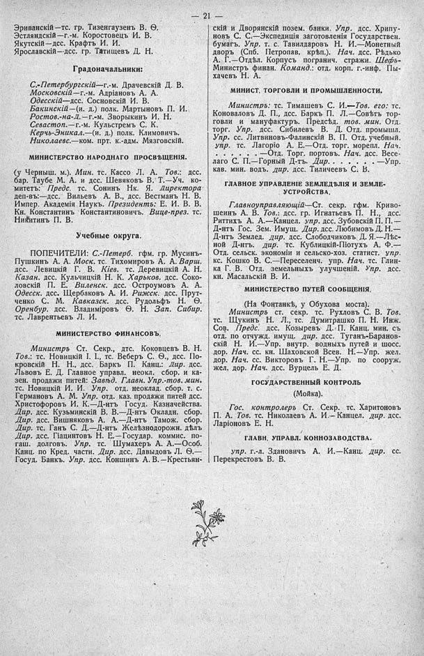

Лист источника 67
Скан

Распознанный текст
— 21 —
Эриванскій—тс. гр. Тизенгаузенъ В. Ѳ.
Эстляндскій—г.-м. Коростовецъ И. В.
Якутскій—дсс. Крафтъ И. И.
Ярославскій—дсс. гр. Татищевъ Д. Н.
Градоначальники:
С.-Петербургскій—г.-м. Драчевскій Д. В.
Московскій—г.-м. Адріановъ А. А.
Одесскій—дсс. Сосновскій И. В.
Бакинскій—(и. д.) полк. Мартыновъ П. И.
Ростов.-на-Д.—г.-м. Зворыкинъ И. Н.
Севастоп.—г.-м. Кульстремъ С. К.
Керчь-Эникал.—(и. д.) полк. Климовичъ.
Николаевс.—ком. прт. к.-адм. Мязговскій.
МИНИСТЕРСТВО НАРОДНАГО ПРОСВѢЩЕНІЯ.
(у Черныш. м.). Мин. тс. Кассо Л. А. Тов.: дсс.
бар. Таубе М. А. и дсс. Шевяковъ В. Т.—Уч. ко-
митетъ: Предс. тс. Сонинъ Нк. Я. Директора
деп-въ:—дсс. Вильевъ А. В., дсс. Вестманъ Н. В.
Импер. Академія Наукъ. Президентъ: Е. И. В. В.
Кн. Константинъ Константиновичъ. Вице-през. тс.
Никитинъ П. В.
Учебные округа.
ПОПЕЧИТЕЛИ: С.-Петерб. гфм. гр. Мусинъ-
Пушкинъ А. А. Моск. тс. Тихомировъ А. А. Варш.
дсс. Левицкій Г. В. Кіев. тс. Деревицкій А. Н.
Казан. дсс. Кульчицкій Н. К. Харьков. дсс. Соко-
ловскій П. Е. Виленск. дсс. Остроумовъ А. А.
Одесск. дсс. Щербаковъ А. И. Рижск. дсс. Прут-
ченко С. М. Кавказск. дсс. Рудольфъ Н. Ѳ.
Оренбур. дсс. Владиміровъ Ѳ. Н. Зап. Сибир.
тс. Лаврентьевъ Л. И.
МИНИСТЕРСТВО ФИНАНСОВЪ.
Министръ Ст. Секр., дтс. Коковцевъ В. Н.
Тов.: тс. Новицкій І. І., тс. Веберъ С. Ѳ., дсс. По-
кровскій Н. Н., дсс. Баркъ П. Канц.: Дир. дсс.
Львовъ Е. Д. Главное управл. неокл. сбор. и ка-
зен. продажи питей: Завѣд. Главн. Упр.-тов. мин.
тс. Новицкій И. И. Упр. отд. неоклад. сбор. т. с.
Германовъ А. М. Упр. отд. каз. продажи питей дсс.
Христофоровъ И. К.—Д-нтъ Госуд. Казначейства.
Дир. дсс. Кузьминскій В. В.—Д-нтъ Окладн. сбор.
Дир. дсс. Вишняковъ А. А.—Д-нтъ Тамож. сбор.
Дир. тс. Ганъ С. Д.—Д-нтъ Желѣзнодорожн. дѣлъ
Дир. дсс. Гіацинтовъ Н. Е.—Государ. коммис. по-
гаш. долговъ. Упр. тс. Шумахеръ А. А.—Особ.
Канц. по Кред. части. Дир. дсс. Давыдовъ Л. Ѳ.—
Госуд. Банкъ. Упр. дсс. Коншинъ А. В.—Крестьян-
скій и Дворянскій позем. банки. Упр. дсс. Хрипу-
новъ С. С.—Экспедиція заготовленія Государствен.
бумагъ. Упр. т. с. Тавилдаровъ Н. И.—Монетный
дворъ (Спб. Петропав. крѣп.). Нач. дсс. Рѣдько
А. Г.—Отдѣл. Корпусъ погранич. стражи. Шефъ-
Министръ финан. Команд.: отд. корп. г.-инф. Пы-
хачевъ Н. А.
МИНИСТ. ТОРГОВЛИ И ПРОМЫШЛЕННОСТИ.
Министръ: тс. Тимашевъ С. И.—Тов. его: тс.
Коноваловъ Д. П., дсс. Баркъ П. Л.—Совѣтъ тор-
говли и мануфактуръ. Предсѣд. тов. мин. Отд.
торг. Упр. дсс. Сибилевъ В. Д. Отд. промышл.
Упр. сс. Литвиновъ-Фалинскій В. П. Отд. учебный.
Упр. тс. Лагоріо А. Е.—Отд. торг. морепл. Нач.
. . . . . . .—Отд. Торг. портовъ. Нач. дсс. Весе-
лаго С. П.—Горный Д-тъ. Дир. . . . . . .—Упр.
кав. мин. водъ. дир. дсс. Тиличеевъ С. В.
ГЛАВНОЕ УПРАВЛЕНІЕ ЗЕМЛЕДѢЛІЯ И ЗЕМЛЕ-
УСТРОЙСТВА.
Главноуправляющій—Ст. секр. гфм. Криво-
шеинъ А. В. Тов.: дсс. гр. Игнатьевъ П. Н., дсс.
Риттихъ А. А.—Канцел. упр. дсс. Зубовскій П. П.—
Д-нтъ Гос. Зем. Имущ. Дир. дсс. Любимовъ Д. Н.—
Д-нтъ Землед. дир. дсс. Слободчиковъ Д. Я.—Лѣс-
ной Д-нтъ. дир. тс. Кублицкій-Піотухъ А. Ф.—
Отд. сельск. экономіи и сельско-хоз. статист. упр.
кс. Кошко В. С.—Переселенч. упр. Нач. тс. Глин-
ка Г. В. Отд. земельныхъ улучшеній. Упр. дсс.
кн. Масальскій В. И.
МИНИСТЕРСТВО ПУТЕЙ СООБЩЕНІЯ.
(На Фонтанкѣ, у Обухова моста).
Министръ ст. секр. тс. Рухловъ С. В. Тов.
тс. Щукинъ Н. Л., тс. Думитрашко П. Н. Инж.
Сов. Предс. дсс. Козыревъ Д. П. Канц. мин. съ
отд. по отчужд. имущ. дир. дсс. Туганъ-Баранов-
скій Н. И.—Упр. внутр. водныхъ путей и шосс.
дор. Нач. сс. кн. Шаховской Всев. Н.—Упр. жел.
дор. Нач. сс. Викторовъ Г. Н.—Упр. по сооруж.
жел. дор. Нач. дсс. Вурцель Е. Д.
ГОСУДАРСТВЕННЫЙ КОНТРОЛЬ
(Мойка).
Гос. контролеръ Ст. Секр. тс. Харитоновъ
П. А. Тов. тс. Николаевъ А. И.—Канцел. дир. дсс.
Ларіоновъ Е. Н.
ГЛАВН. УПРАВЛ. КОННОЗАВОДСТВА.
упр. г.-л. Здановичъ А. И.—Канц. дир. сс.
Перекрестовъ В. В.